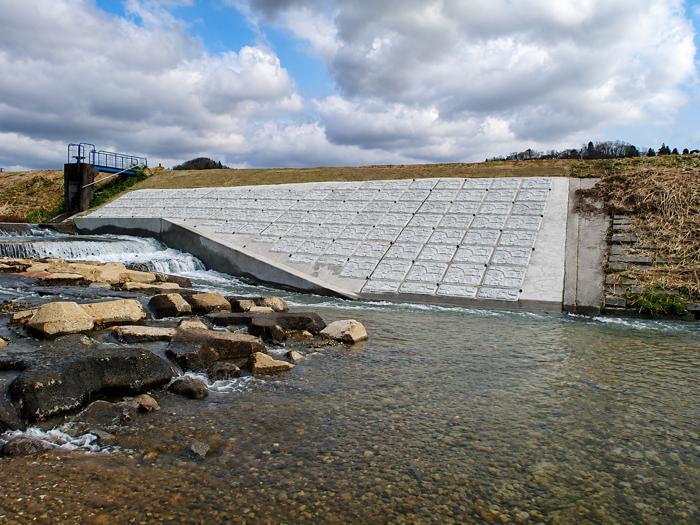
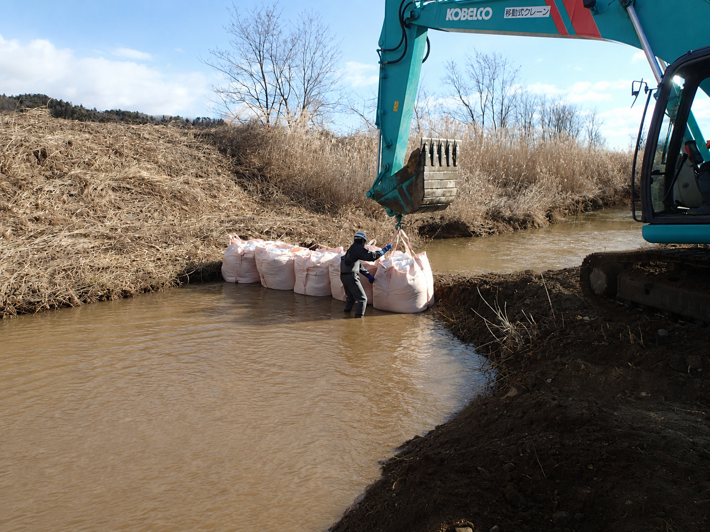
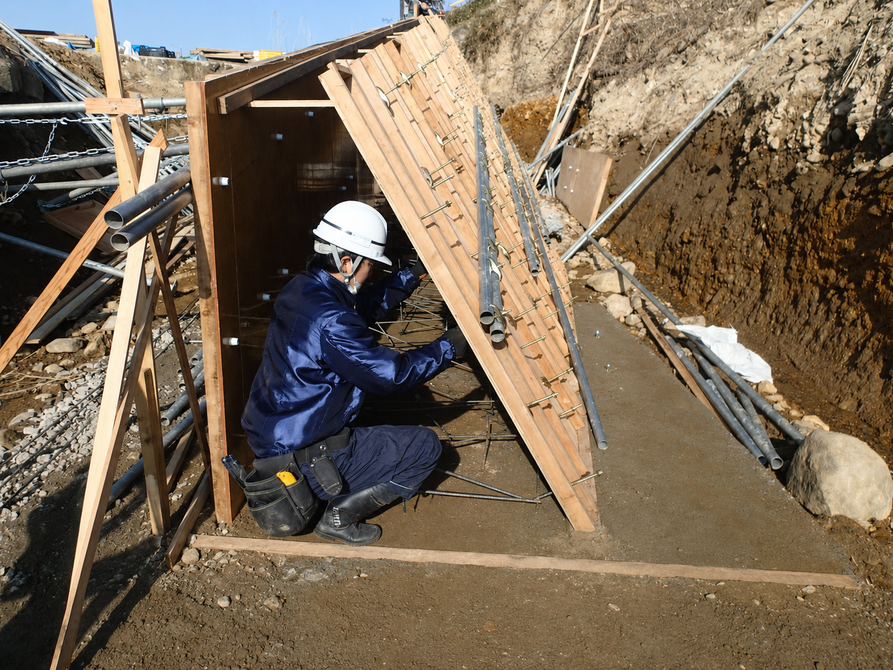
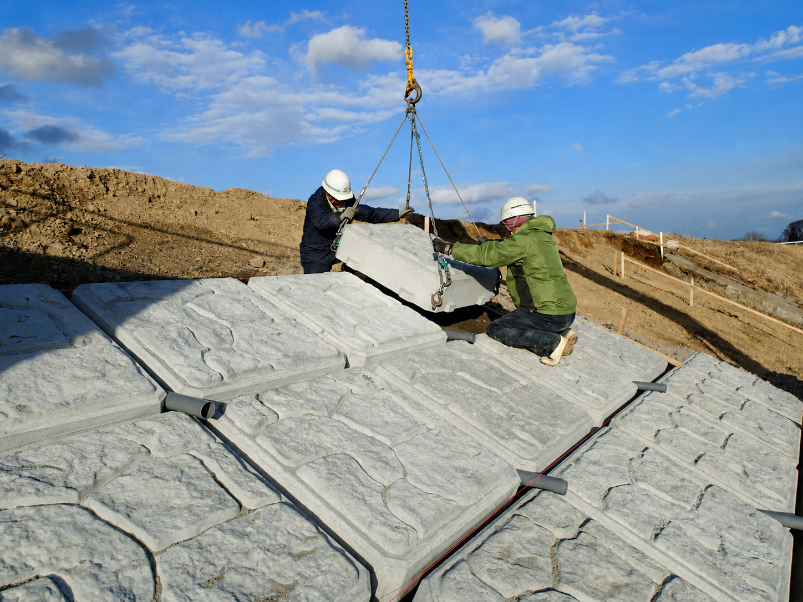
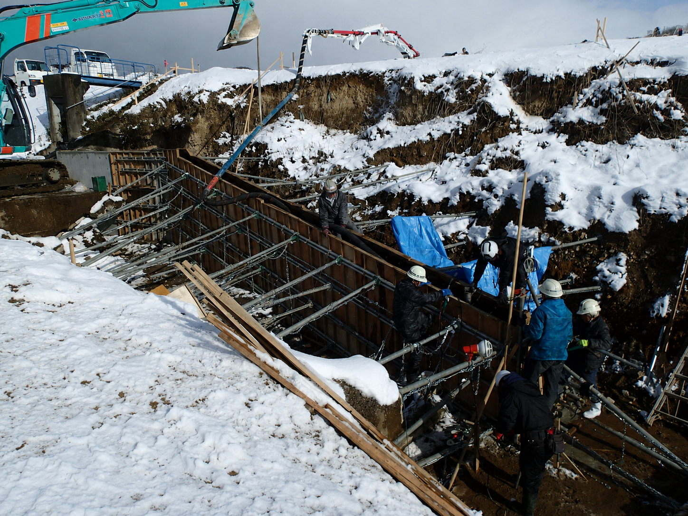

土木一式工事 ｜ 施工実績
WORKS
災害で損傷した護岸を復旧し、地域の安全を守る
災害により損傷した河川護岸を復旧し、河岸の安定と安全を回復する工事です。
豪雨などの災害で崩れた河川護岸を復旧する工事です。
施工区間の水替え、河床・法面の掘削整形、護岸ブロックの据付を行い、河岸の安定性と通水機能を回復させます。
現場条件に応じた安全管理と環境保全に配慮し、地域の暮らしを支える河川機能の早期回復に取り組みます。

施工区間の水替えから護岸の仕上げまで、各工程で品質と安全、環境保全に配慮しながら施工を進めます。




土木一式工事、解体工事、再生可能エネルギー事業、林業、農業に関する
ご相談・お問い合わせは、いつでもお気軽にお寄せください。